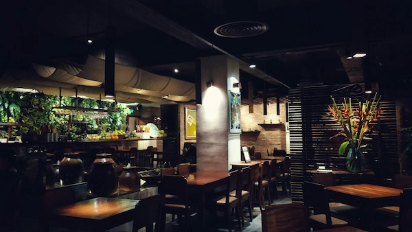
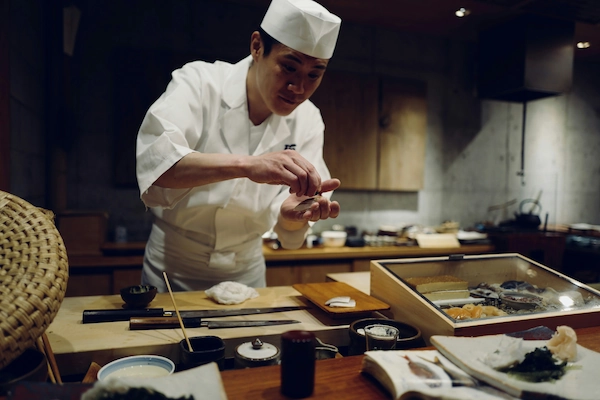
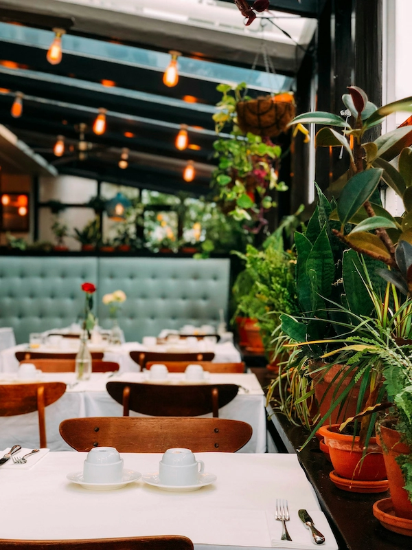
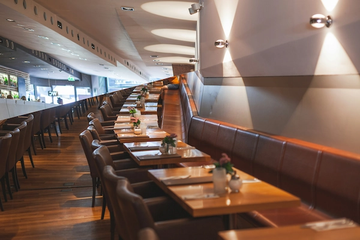
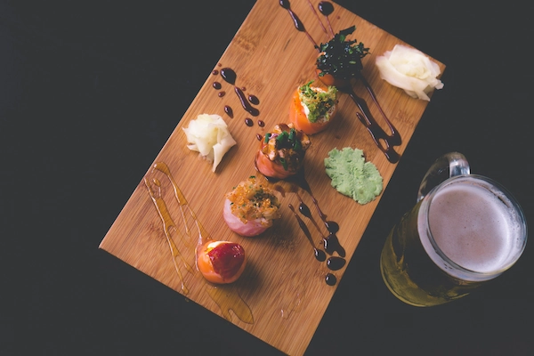
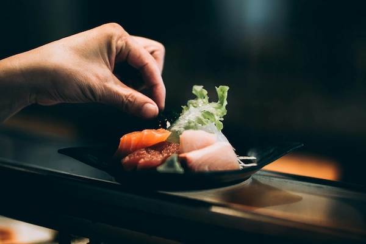

Sushi Master: Opdag Københavns Bedste Sushi
"Leder du efter det perfekte sted at nyde sushi? Vi har samlet alle de nødvendige oplysninger for dig!"
“Sushi Master er din ultimative guide til at udforske Københavns mangfoldige og spændende sushi-scene. Vi stræber efter at kuratere en omfattende liste over byens bedste sushi-steder, der tilbyder alt fra autentiske japanske delikatesser til innovative smagskreationer.Med vores ekspertanmeldelser, anbefalinger og insider-tips er det vores mål at sikre, at du oplever det bedste, som København har at tilbyde inden for sushi. Uanset om du leder efter en intim omgivelse, en trendy atmosfære eller en udsøgt spiseoplevelse, er Sushi Master her for at guide dig til de perfekte sushi-muligheder, der passer til dine præferencer og smag. Lad os være din ledsager på din rejse gennem Københavns sushi-landskab og hjælpe dig med at opdage de skjulte perler og de ikoniske favoritter, der vil fortrylle dine smagsløg og efterlade dig med uforglemmelige kulinariske minder."
Sticks 'n' Sushi
Dette sted er kendt for deres fokus på kvalitet og friskhed af deres sushi. Med en bred vifte af traditionelle og moderne sushiretter tilbyder Sushi Lovers en fornøjelig spiseoplevelse for sushielskere.
Learn MoreDamindra
Damindra er kendt for deres håndværk og fokus på kvalitet, og de tilbyder et udvalg af traditionelle og moderne sushiretter. Med en elegant atmosfære og en omhyggelig sammensat menu er det et sted værd at udforske for sushielskere
Learn MoreSushi Lovers
Dette sted er kendt for deres fokus på kvalitet og friskhed af deres sushi. Med en bred vifte af traditionelle og moderne sushiretter tilbyder Sushi Lovers en fornøjelig spiseoplevelse for sushielskere.
Learn MoreIzumi Sushi
En anden populær destination for sushi i København er Izumi Sushi, der serverer autentiske japanske retter, herunder frisk sashimi, nigiri og lækre maki-ruller. Deres omfattende menu og imødekommende atmosfære gør det til et hit blandt lokalbefolkningen og besøgend
Learn MoreHatoba
Med flere beliggenheder i København tilbyder Hatoba autentisk japansk sushi af høj kvalitet, herunder friske sashimi, nigiri og maki-ruller. Deres omhyggeligt tilberedte retter og elegante præsentation gør det til et populært valg for sushi-entusiaster
Learn MoreKiin Kiin
Selvom Kiin Kiin er bedst kendt for sin thailandske fine dining, har de også en imponerende sushi-oplevelse. Deres sushi er udført med samme sans for detaljer og kvalitet som resten af deres menu. Med en unik fusion af thailandske og japanske smagsoplevelser er Kiin Kiin et perfekt valg for dem, der ønsker at udforske en anderledes og eksklusiv sushioplevelse i København.
Learn MoreOplev sushiens verden med os - din guide til autentiske smagsoplevelser, kreative opskrifter og ekspertvejledning